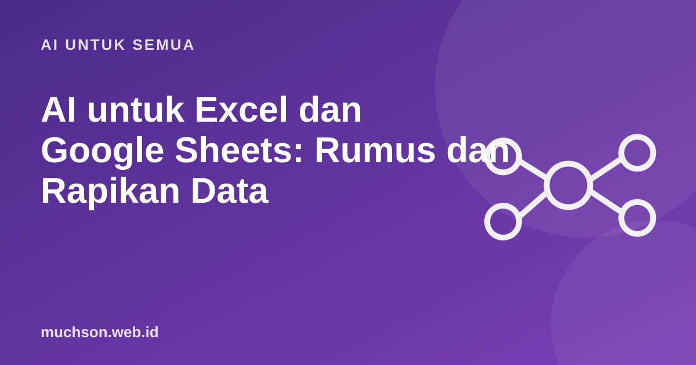

Beranda › Artikel › AI untuk Semua
AI untuk SemuaAI untuk Excel dan Google Sheets: Rumus dan Rapikan Data
Banyak orang menyerah pada spreadsheet karena rumus yang rumit. Asisten AI bisa membuat dan menjelaskan rumus dengan cepat, asalkan Anda bisa menggambarkan datanya dengan jelas. Dan asalkan Anda menguji hasilnya.

Cara meminta rumus yang tepat
Rumus dasar yang berguna
| Tujuan | Rumus (contoh) | Catatan |
|---|---|---|
| Menjumlah | =SUM(B2:B20) | Pakai rentang sel |
| Menjumlah dengan syarat | =SUMIF(A2:A20, "Makanan", B2:B20) | Jumlah hanya kategori tertentu |
| Menghitung rata-rata | =AVERAGE(B2:B20) | |
| Percabangan | =IF(B2>=70, "Lulus", "Remedial") | Hasil berbeda berdasarkan syarat |
| Mencari data | =VLOOKUP(E2, A2:C20, 3, FALSE) | FALSE = cocok persis |
| Menggabung teks | =A2 & " " & B2 | Hati-hati tanda spasi |
Cara memeriksa hasil AI
Privasi data
Jangan mengunggah spreadsheet berisi data pelanggan atau gaji ke layanan yang tidak disetujui. Cukup jelaskan struktur kolomnya, atau ganti dengan data contoh.
Tanya jawab
Apakah AI bisa membaca file Excel langsung?
Banyak layanan mendukung unggah file dan menganalisisnya. Perhatikan privasi, dan tetap periksa hasilnya.
Mengapa rumus dari AI gagal di Excel saya?
Perbedaan versi, pemisah rumus (koma atau titik koma), atau fungsi yang tidak tersedia. Sebutkan aplikasi dan versinya.
Rumus apa yang sebaiknya saya pelajari dulu?
SUM, IF, SUMIF, dan VLOOKUP atau XLOOKUP mencakup sebagian besar kebutuhan awal.